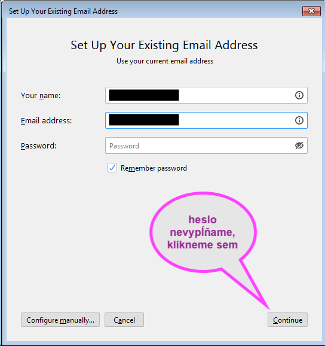
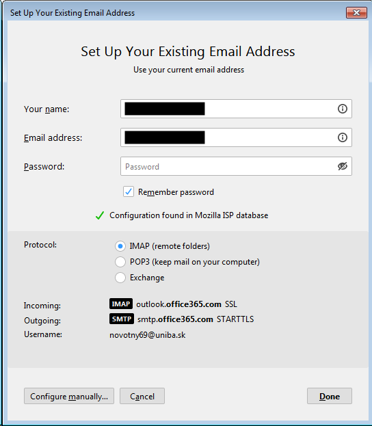
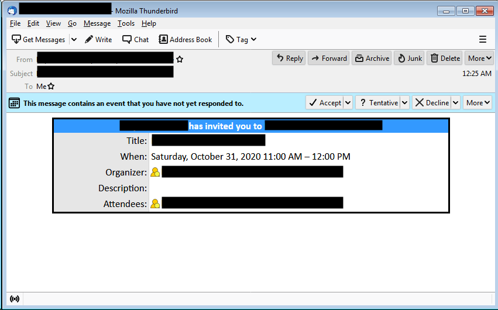
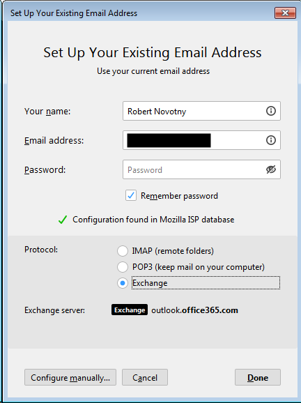
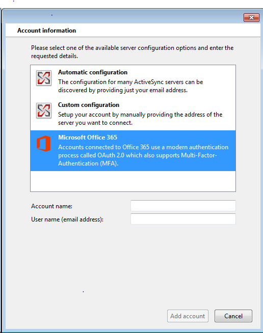
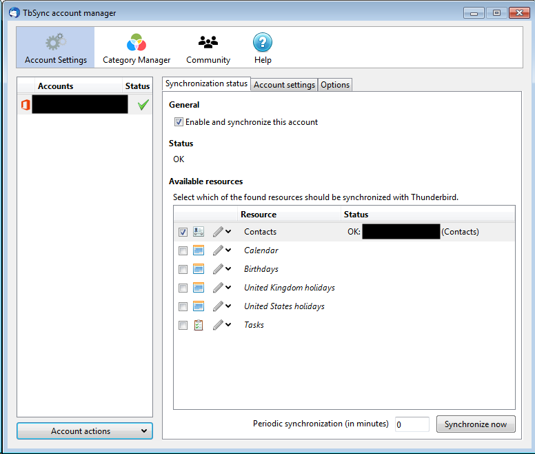

Thunderbird sa dokáže integrovať s Office 365 podobným spôsobom ako Outlook.
K dispozícii je integrácia kalendára, kontaktov a za poplatok aj spracovávanie pozvánok na udalosti .
Budeme pracovať s troma add-onmi (doplnkami).
- TBSync – integrácia kontaktov, kalendáre a úlohy.
- EAS Sync pre TBSync – podpora pre Exchange ActiveSync, ktorou z Office 365 vytiahneme kontakty.
- OWL for Exchange – platený plugin pre e-maily a pozvánky na udalosti pre protokol Outlook Web Access (OWA).
Ako sa rozhodnúť?
- Stačí mi len e-mail, firemné kontakty a kalendár určený len na čítanie? Použime štandardné vytváranie účtu cez protokoly IMAP alebo POP3 a add-ony TBSync + EAS Sync.
- Potrebujem e-mail, kontakty, kalendár a vybavovať pozvánky na udalosti a chcem zaplatiť 10 dolárov ročne? Použime add-on Owl na vytvorenie e-mailového účtu cez protokol Exchange, pričom cez neho vybavíme aj kalendár a udalosti, a add-on TBSync spolu s EAS Sync využijeme na synchronizáciu firemných kontaktov.
Variant I: Nastavenie Thunderbirdu cez protokol POP/IMAP
V Thunderbirde vytvoríme nový účet - či už pri štarte alebo dodatočne cez Tools | Account Settings a tlačidlo Account Actions a možnosť Add Mail Account…

Vyplníme meno a e-mailovú adresu, ale heslo neuvádzajme. Ak používame štandardného zamestnávateľa, mnoho z nich je v internej databáze Thunderbirdu a dokáže svoje nastavenia poskytnúť automaticky.
Thunderbird doplní nastavenia, my vyplníme heslo a sme pripravení.

Štandardné nastavenia serverov pre Office 365
- POP
- Server: outlook.office365.com
- Port: 995
- Encryption Method: TLS/SSL
- IMAP
- Server: outlook.office365.com
- Port: 993
- Encryption Method: TLS/SSL
- SMTP
- Server: outlook.office365.com * Port: 587
- Encryption Method: STARTTLS
Autentifikácia
V závislosti od zamestnávateľa môžeme na autentifikáciu použiť buď priamo login a heslo alebo autorizáciu cez OAuth 2. Implicitné nastavenie využíva Normal Password.
Nastavenie kontaktov a kalendára
Teraz môžeme nastaviť kontakty a kalendár pomocou dvojice add-onov TBSync a EAS Sync.
Variant II: Owl For Exchange: maily, kalendár a udalosti cez protokol OWA
Owl for Exchange je platený add-on pre integráciu mailov, kalendárov a udalostí cez protokol OWA. Stojí síce 10 dolárov ročne (s mesačnou skúšobnou lehotou), ale podporíte dlhoročného prispievateľa do zdrojákov Thunderbirdu.
Okrem toho získame podporu pre obsluhu pozvánok na udalosti priamo z okna Thunderbirdu.
Pozor! Ak konfigurujeme nový účet v Thunderbirde, použime buď OWL alebo predošlé riešene cez protokol IMAP/POP/SMTP!

Owl je dokonca propagovaný v Thunderbirde. Ak vytvárame nový účet a zvolíme typ Exchange, dostaneme ponuku pre inštaláciu tohto add-onu.

Prihlásenie sa realizuje cez OAuth, čiže zrejme opäť uvidíme prihlasovací screen svojho zamestnávateľa.
Owl zavedie účet medzi štandardné účty spravovateľné cez Tools -> Account Settings presne tak ako akýkoľvek iný účet. Prihlásenie je riešené špecificky, cez metódu Open Login web page.
TBSync + EAS Sync: kontakty a kalendáre
Táto dvojica pluginov dokáže:
- poskytnúť firemné kontakty a kalendáre, ak sme použili bezplatný variant s IMAP/POP3
- poskytnúť len firemné kontakty, ak sme využili OWL a protokol OWA.
Kalendár síce vieme prepojiť a zobraziť do rozhrania Thunderbirdu, ale udalosti v mailoch nebudeme vedieť ani schváliť ani zamietnuť. Vždy keď príde pozvánka na udalosť, dostaneme mail s textom:
To receive meeting invitations as .iCalendar attachments instead of Outlook Web App links, go to https://outlook.office365.com/owa/upjs.sk/?path=/options/popandimap and select Send meeting invitations in iCalendar format.
Na jeseň 2020 je podpora zvláštna – toto nastavenie sa v Outloooku na webovej verzii Office 365 vôbec nenachádza.
Niektorí zamestnávatelia dokážu povoliť pre kalendáre a udalosti protokol ActiveSync a tým umožniť týmto add-onom pracovať aj s udalosťami, ale v praxi je to skôr výnimka (pozri tiež zdroje na konci článku!).
Ak to náš zamestnávateľ nedokáže, musíme použiť add-on Owl, a TBSync / EAS Sync použijeme len na synchronizáciu kontaktov.
Konfigurácia
Konfigurácia add-onu sa rieši cez separátny dialóg. V hlavnom menu Tools -> Synchronization Settings (TBSync) pridáme nový účet Exchange ActiveSync a vyberieme si konfiguráciu typu Microsoft Office 365.

Prihlásime sa do účtu a akceptujeme dialógové okna implementujúce login cez protokol OAuth - čo pravdepodobne vyvolá autentifikáciu cez prihlasovacie okno vášho zamestnávateľa.
Ak používame Owl, v následnom dialógu vypneme synchronizáciu položiek a ponecháme len kontakty (Contacts), pretože nechceme duplicitný kalendár (z Owl a TBSync).

Ak Owl nechceme používať, môžeme synchronizovať všetky položky.
Nezabudneme nastaviť periódu synchronizácie – štandardná nula zodpovedá ručnej synchronizácii, ale je lepšie použiť napr. hodinový interval.
Záver
Kolujú anektodálne historky, ako používatelia rozbehali podporu pre pozvánky aj iným spôsobom. Problém je však v šťastnej kombinácii add-onov a verzie Thunderbirdu.
Thunderbird verzie 78 je značne odlišný od predošlých verzií a TBSync rovnako nedoimplementoval podporu pre všetky okrajové prípady.
Kombinácia týchto troch doplnkov je preverená a funguje aj na modernom Thunderbirde, čo sa výmenou za pár eúr ročne oplatí.
Pokročilé koncepty
Beta verzie TBSync a EAS
Ak chcete žiť na hrane, môžete si ručne stiahnuť baličky XPI pre TBSync a EAS a pridať si ich do Thunderbirdu. Tieto verzie často obsahujú vlastnosti, ktoré na oficiálnom portáli ešte nie sú zverejnené.
Archív je k dispozícii na https://tbsync.jobisoft.de/beta/TB78/.
TBSync má zdrojové kódy uverejnené na GitHube.
Povolenie ActiveSync v Exchange
Váš správca možno vie povoliť ActiveSync a tým odstráni nutnosť používať Owl. Dokumentácia pre Exchange Server využíva buď klikanie v UI pre Exchange Server alebo cmdlet Set-CasMailbox.